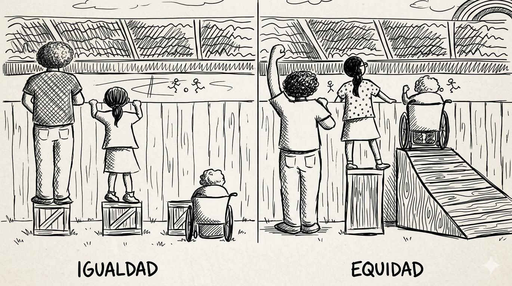

Del contexto global al caso de Venezuela
1 de cada 3 personas en investigación global son mujeres.
Representación real en ingeniería y tecnología (G20).
Participación marginal en comunidades de código abierto.
Presencia mínima en repositorios clave como Python.
La Tubería Rota de STEM: El filtro sistémico que reduce la presencia femenina.
La ciencia abierta promete democratizar el conocimiento, pero ¿realmente está siendo inclusiva?
Las investigadoras se involucran más en prácticas de Ciencia Abierta que sus colegas hombres.
La participación femenina en la Ciencia Abierta muestra un crecimiento incremental constante.
Estas contribuciones abiertas suelen ser menos valoradas que los méritos tradicionales en las evaluaciones.
Techo de cristal STEM: Puestos directivos ocupados por mujeres (frente al 27.5% en otros sectores).
Efecto Impostor Muchas candidatas subestiman sus habilidades técnicas o asumen no estar calificadas para el entorno.
Entornos Hostiles Investigación documenta experiencias negativas sistemáticas de las mujeres en comunidades OSS.
Las mujeres ocupan apenas el 7% de puestos de liderazgo y directivas en el Software Libre.
Falta de Referentes Escasa visibilidad pública de mujeres programadoras y hackers como modelos a seguir.
Barreras estructurales de género en el ecosistema tecnológico y científico global.
Menor Brecha Educativa Notable avance en cerrar brechas de género en las aulas, aunque persisten disparidades en el rendimiento técnico.
+7 Horas Carga de Cuidados Tiempo adicional semanal que las adolescentes dedican al trabajo doméstico y de cuidados frente a sus pares varones.
53% Paridad en Venezuela Participación de mujeres en investigación científica, superando por 20 puntos porcentuales el promedio regional.
52 Años Brecha en STEM Proyección para alcanzar la paridad total en la región. Actualmente, ellas ocupan solo el 12% de los puestos directivos.
Fuente: Datos e investigaciones recientes / UNESCO.
Es un movimiento que transforma la producción del conocimiento, haciéndolo accesible, transparente y colaborativo para todos los niveles de la sociedad.
Disponibilidad de datos brutos para validación y reutilización global.
Protocolos y metodologías compartidas para garantizar la replicabilidad.
Código fuente accesible y modificable: la base tecnológica de la ciencia.
Procesos de evaluación por pares transparentes y participativos.
Participación activa de la sociedad en la producción de conocimiento.
No es solo acceso,
es DEMOCRATIZACIÓN
Respeta la libertad de los usuarios y la comunidad. Es una cuestión de autonomía ética, no de costo monetario.
“Free as in speech, not as in beer”
(Libre como en libertad de expresión, no como en gratuidad).
El programa para cualquier propósito sin restricciones.
Acceso al código fuente para ajustarlo a tus necesidades.
Compartir copias libremente para ayudar a la comunidad.
Contribuir con mejoras para el beneficio de todos.
Código auditable para verificar resultados científicos.
Metodologías libres de cajas negras propietarias.
Sistemas globales sin costos de licencias privadas.
Control total sobre las herramientas de investigación.
La Recomendación de la UNESCO sobre Ciencia Abierta establece un marco global basado en pilares esenciales estructurales:
CUATRO VALORES FUNDAMENTALES:
Garantiza una ciencia rigurosa, altamente confiable, reproducible y verificable por la comunidad global.
El conocimiento científico es un bien público global que pertenece y debe retornar a toda la humanidad.
Asegura igual oportunidad para que investigadores y ciudadanos puedan participar, aportar y beneficiarse.
Abre las puertas a múltiples formas de conocimiento, valorando especialmente saberes indígenas y locales.
SEIS PRINCIPIOS OPERATIVOS:
Transparencia, escrutinio, crítica y reproducibilidad
Igualdad de oportunidades
Responsabilidad, respeto y rendición de cuentas
Colaboración, participación e inclusión
Flexibilidad
Sostenibilidad
Estándares globales (2016) para que la investigación sea procesable por humanos y máquinas.
Encontrables: Metadatos ricos e identificadores persistentes (DOI).
Accesibles: Protocolos de comunicación abiertos y gratuitos.
Interoperables: Formatos y lenguajes estándar para intercambio de datos.
Reutilizables: Licencias claras y procedencia de datos bien documentada.
“Tan abierto como sea posible, tan cerrado como sea necesario”
Ética y soberanía: Complemento para gestionar datos de comunidades indígenas y grupos vulnerables.
01 Conocimiento científico abierto
02 Infraestructuras de ciencia abierta
03 Participación abierta de actores sociales
04 Diálogo abierto con otros sistemas de conocimiento
05 Comunicación científica abierta
Hito de soberanía (01/feb/2023): Compromiso político de 13 países de la región para implementar la Recomendación de la UNESCO adaptada a las realidades de América Latina y el Caribe.
PRINCIPIOS CLAVE:
El conocimiento científico es entendido y defendido como un bien común de los pueblos.
El acceso equitativo es imprescindible para cerrar brechas y empoderar a las mujeres en la ciencia.
Promueve una ecología de saberes mediante el diálogo abierto con conocimientos ancestrales y locales.
MAPA DE CONEXIÓN DIRECTA EN LA INVESTIGACIÓN:
Igualdad de género en el centro
Acceso libre al conocimiento
Independencia tecnológica
:::
